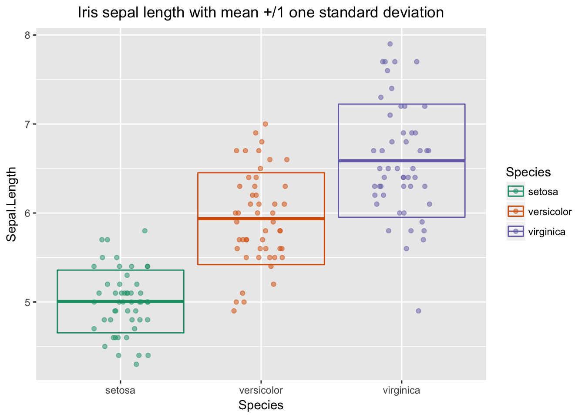

let Example
Nina Zumel
2018-01-20
An example of using let to wrap dplyr expressions as functions.
library("dplyr")
library("replyr")The desired task: write a function that takes a data frame with a specified numerical column and an optional grouping column, and returns a data frame with one row per group containing:
- the mean value
- the upper and lower bounds of a +/- 1 standard deviation around the mean
- the median value
- the upper and lower bounds of an interval +/- one-half the IQR around the median.
The dplyr expression for such a table is easy when the column names are known, but complicated when they are not. We use wrapr::let to write such a function without the use of lazyeval or rlang/tidyeval.
sumstat_intervals = function(dframe, colname, groupcolname = NULL) {
mapping = list(col=colname)
if(!is.null(groupcolname)) {
dframe <- group_by_(dframe, groupcolname)
}
let(alias = mapping,
expr={
summarize(dframe,
sdlower = mean(col)-sd(col),
mean = mean(col),
sdupper = mean(col) + sd(col),
iqrlower = median(col)-0.5*IQR(col),
median = median(col),
iqrupper = median(col)+0.5*IQR(col))
})
}We can test sumstat_intervals on iris:
sumstat_intervals(iris, "Sepal.Length")
# sdlower mean sdupper iqrlower median iqrupper
# 1 5.015267 5.843333 6.671399 5.15 5.8 6.45sumstat_intervals(iris, "Sepal.Length", "Species")
# # A tibble: 3 x 7
# Species sdlower mean sdupper iqrlower median iqrupper
# <fctr> <dbl> <dbl> <dbl> <dbl> <dbl> <dbl>
# 1 setosa 4.65 5.01 5.36 4.80 5.00 5.20
# 2 versicolor 5.42 5.94 6.45 5.55 5.90 6.25
# 3 virginica 5.95 6.59 7.22 6.16 6.50 6.84sumstat_intervals(iris, "Petal.Length", "Species")
# # A tibble: 3 x 7
# Species sdlower mean sdupper iqrlower median iqrupper
# <fctr> <dbl> <dbl> <dbl> <dbl> <dbl> <dbl>
# 1 setosa 1.29 1.46 1.64 1.41 1.50 1.59
# 2 versicolor 3.79 4.26 4.73 4.05 4.35 4.65
# 3 virginica 5.00 5.55 6.10 5.16 5.55 5.94We can also use let to parameterize other functions that specify their parameters via non-standard evaluation. For example, we could write a ggplot2 function to plot the information in sumstat_intervals (either the mean-centered interval or the median-centered one) using ggplot2::aes_string. Or we could use wrapr::let.
plot_distributions = NULL
if (requireNamespace("ggplot2")) {
library("ggplot2")
plot_distributions = function(dframe, colname, groupcol,
intervaltype="mean", title="") {
if(!(intervaltype %in% c("mean", "median")))
error("Intervaltype must be one of 'mean' or 'median'")
sintervals = sumstat_intervals(dframe, colname, groupcol)
# I could do the following with aes_string, but what the heck
mapping = list(xval=groupcol, yval=colname, center=intervaltype)
if(intervaltype=="mean") {
mapping2 =list(lower="sdlower", upper="sdupper")
} else {
mapping2 =list(lower="iqrlower", upper="iqrupper")
}
mapping = c(mapping, mapping2)
let(alias=mapping,
expr = {
ggplot(dframe, aes(x=xval,color=xval)) +
geom_jitter(aes(y=yval), width=0.2, height=0, alpha=0.5) +
geom_crossbar(data=sintervals, aes(y=center, ymin=lower, ymax=upper)) +
ggtitle(title) + theme(plot.title=element_text(hjust=0.5)) +
scale_color_brewer(palette="Dark2")
})
}
}
# Loading required namespace: ggplot2if(!("NULL") %in% class(plot_distributions)) {
plot_distributions(iris, "Sepal.Length", "Species",
title="Iris sepal length with mean +/1 one standard deviation")
}
if(!("NULL") %in% class(plot_distributions)) {
plot_distributions(iris, "Petal.Width", "Species",
intervaltype="median",
title="Iris petal width with median and centered IQR interval")
}